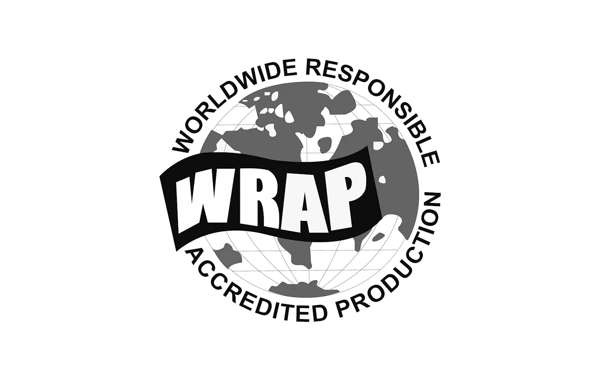
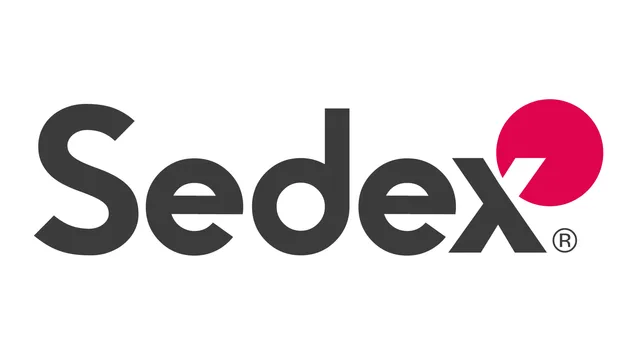
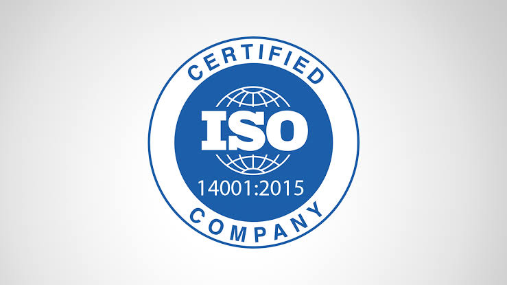
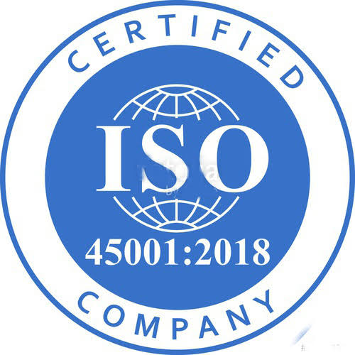
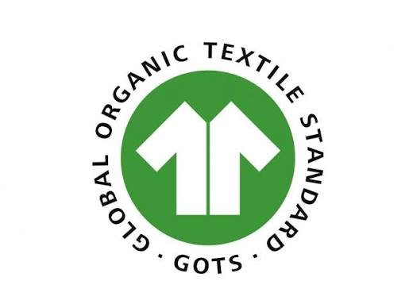
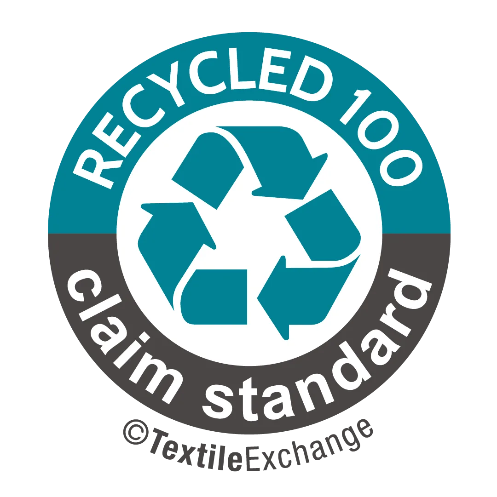
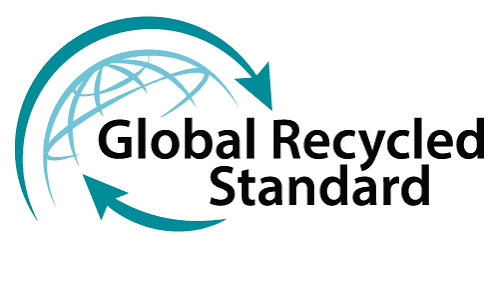

Checked three times.
Certified nine ways.
Quality at Silkstone is a digitally managed system with a zero defects policy, audited to the standards our buyers ask for. If a buyer needs a certificate we do not hold, we obtain it.
Every incoming roll passes through the fabric inspection machine. Defects, shade and weight are recorded against the roll number. A fault found here costs a roll. Found later, it costs an order.
Checks run inside each line while the garment is being built, recorded digitally by operation, so a fault is caught at the operation causing it and not at the end of the run.
Finished garments are inspected to the buyer's AQL, then pass a calibrated metal detector inside a secured inspection zone before the carton is sealed.
What we hold.
Certificate numbers and copies are available to buyers on request. Logos are shown as issued by each scheme.

Worldwide Responsible Accredited Production. Facility certification for lawful, humane and ethical manufacturing.

Sedex membership with a SMETA social audit covering labour standards, health and safety, environment and business ethics.

Quality management system.

Environmental management system.

Occupational health and safety management system.

Global Organic Textile Standard. Organic fibre with processing, social and chemical criteria. Licence number shown on request.

Organic Content Standard. Chain of custody for organic fibre content, with transaction certificates per shipment.

Recycled Claim Standard. Chain of custody for recycled content.

Global Recycled Standard. Recycled content with social, environmental and chemical requirements.
Buyers with their own audit programmes, including Higg FEM, Better Cotton and brand-specific codes of conduct, are supported. Ask and we will arrange it.
Needles, metal, and pull tests.
- Broken needle policy. Every broken needle is logged, all fragments recovered and matched before a replacement is issued.
- Metal detection. A calibrated detector inside a secured zone, every garment, before final packing.
- Pull testing. Buttons, snaps and drawcord tips tested for durability and child safety per batch.
- Chemicals. No hazardous chemicals in stain removal or processing. Restricted substance lists followed per buyer.
- Fire and safety. Emergency exits on every floor, smart fire alarms, extinguishers placed to plan.
Everything is written down.
Inline and final inspection results are recorded in the ERP against the order, line and operation. Buyers can see quality reports as they are produced, and every carton can be traced back to its rolls.
Follow a sample order